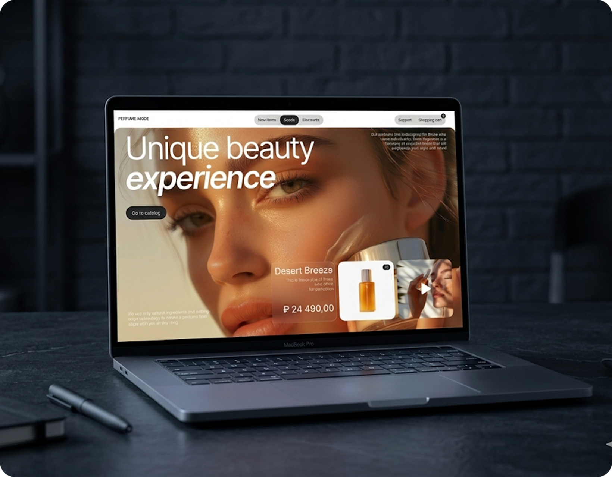
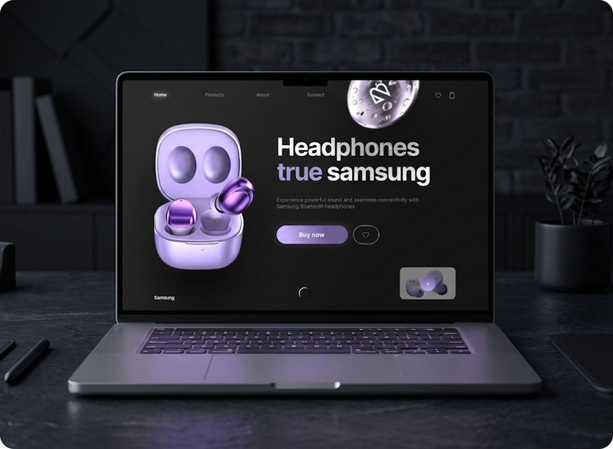
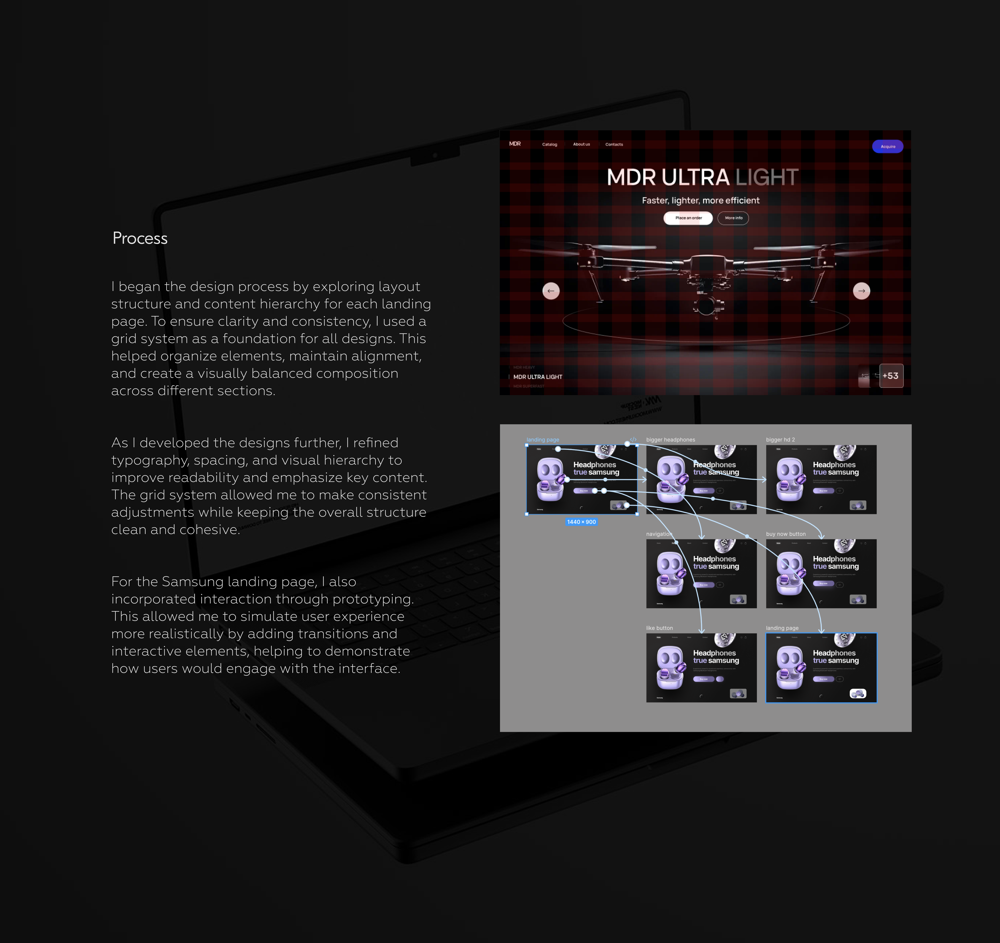
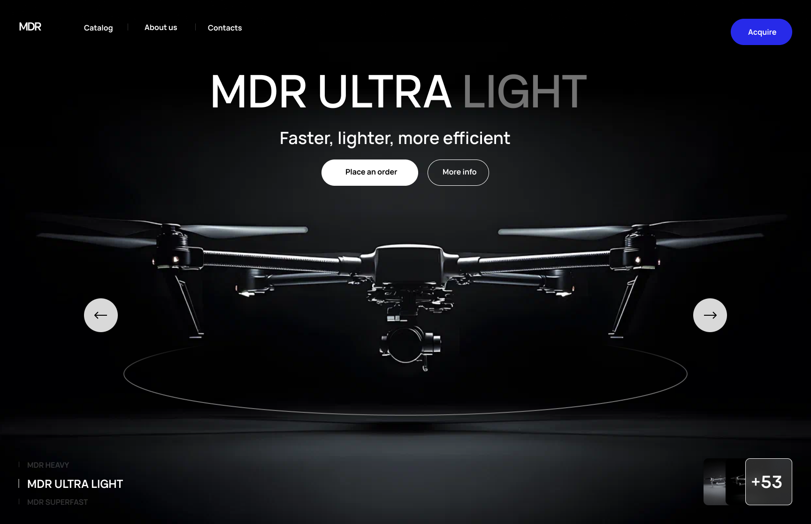
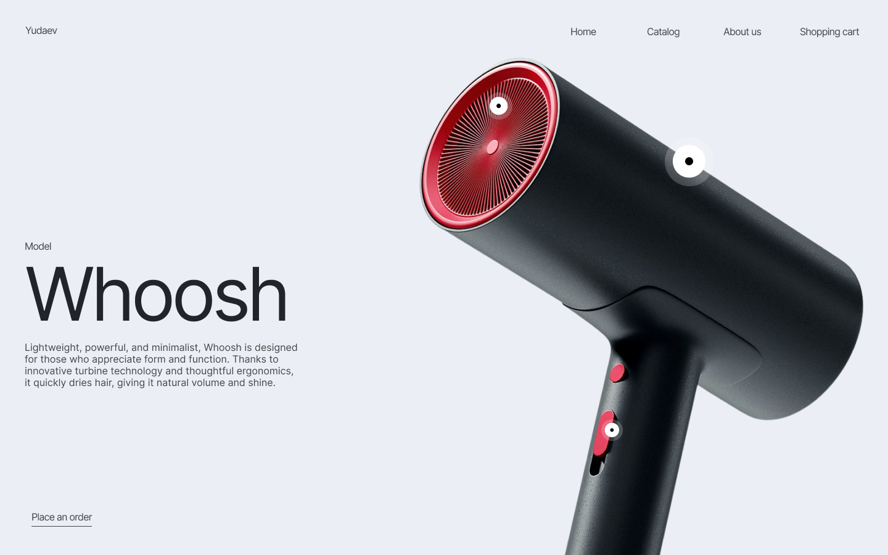
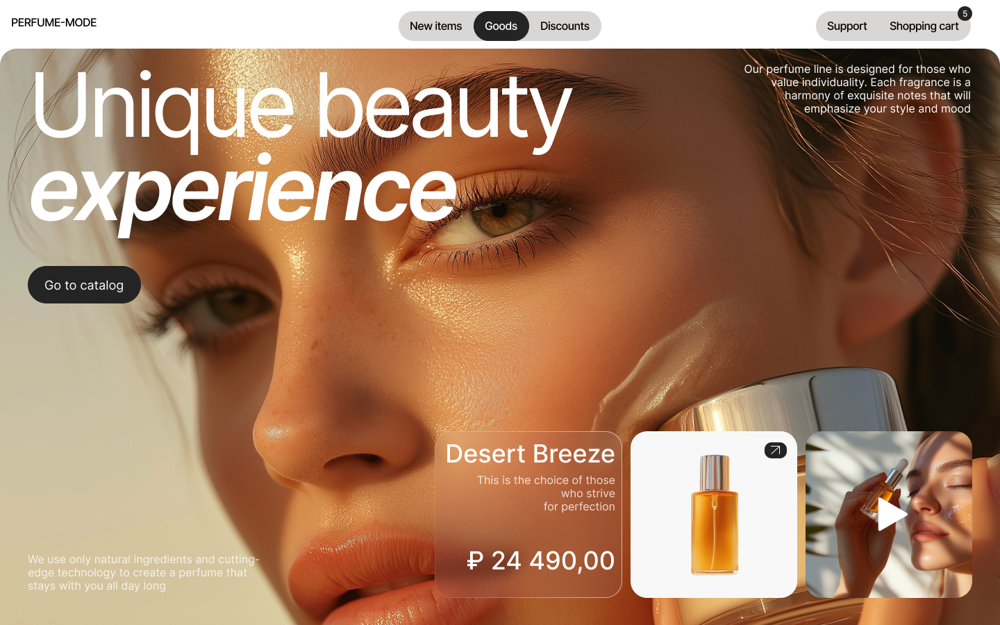
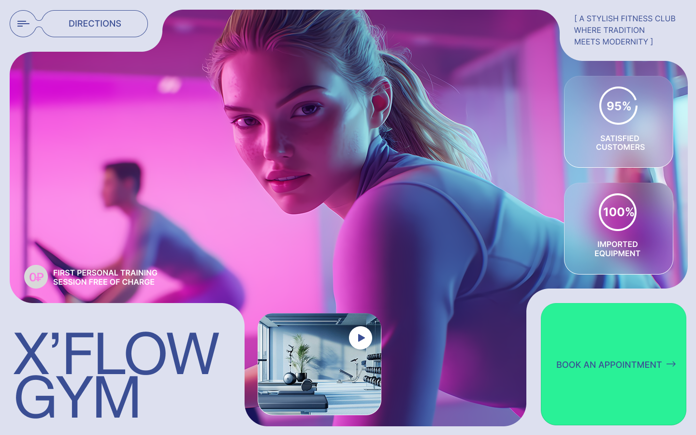

Landing Pages Design
Link to Figma ↗A one-page landing design created as part of a 4-day intensive course.
The goal was to design a visually appealing and user-friendly landing pages for different companies.
A one-page landing design created as part of a 4-day intensive course.
The goal was to design a visually appealing and user-friendly landing pages for different companies.

To create a clean, visually engaging landing page that reflects a wellness theme while guiding users toward a clear action. The focus was on simplicity, consistency, and a calm, modern aesthetic.
Many landing pages feel cluttered or unclear, making it difficult for users to understand the value or take action. The goal was to design a simple, engaging interface that clearly communicates the message and encourages users to sign up.
Structured sections that guide users naturally through the page.
Cohesive use of colour and typography to reflect the wellness theme.
Strong, visible prompts that encourage user interaction.
Organized content to improve readability and flow.


The final landing page communicates simplicity and clarity, with a visually appealing layout and clear calls to action that guide the user through key sections.
This project helped me understand how color, typography, and spacing influence readability and user perception. I also improved my ability to iterate quickly and apply feedback effectively.
5 Pages Example



